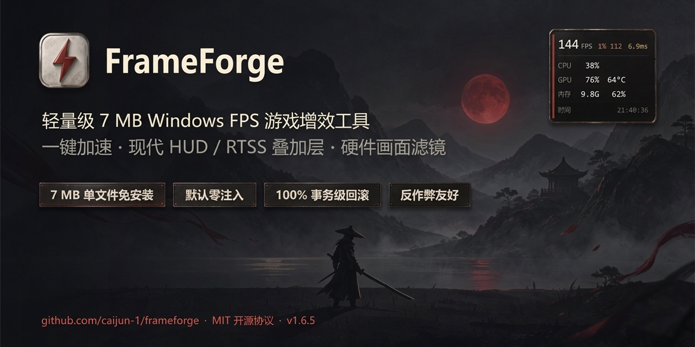

壹01 / PORTABLE
七兆单文件
纯 C# 与原生 GDI+ 实现，由系统自带 csc.exe 直接编译。双击即用，无安装残留，零广告零遥测。
FrameForge 是一款仅约 7 MB 的单文件 Windows FPS 游戏增效工具。默认零 DLL 注入，基于 Intel PresentMon ETW 与 SCTL v2 事务日志构建，集一键可回滚加速、现代毛玻璃 HUD、硬件级画面滤镜与赛后战绩报告于一体。

摒弃臃肿常驻驱动与无节制的系统魔改，每一项优化皆有日志可溯、崩溃亦可自愈。
纯 C# 与原生 GDI+ 实现，由系统自带 csc.exe 直接编译。双击即用，无安装残留，零广告零遥测。
通过 Intel PresentMon ETW 采集帧率与 1% Low，默认分层窗口绘制；独占全屏下可无缝交由 RTSS 渲染。
所有系统改动先落盘 HMAC 签名日志（SCTL v2），配合独立看门狗，崩溃或强杀后自动还原系统原貌。
23 套通用与游戏预设、Gamma LUT + NVAPI 数字振动、DDC/CI 硬件背光与显示器 ICC 配置文件导入。
五套统一配色与三档底板自由切换，自绘叠加层、RTSS 输出与设置预览共享同一绘制管线。
点击上方选项即可实时预览 v1.6.5 叠加层的色彩层级与底板质感，等宽字形保证数字跳动不抖列。


献给在意系统纯净度、反作弊兼容性与代码透明度的竞技玩家。
| 维度 | FrameForge | 传统优化 / 监控组合 |
|---|---|---|
| 体积与驻留 | 单文件约 7 MB，绿色便携，无常驻内核驱动 | 数十至数百 MB，常附带多项服务与驱动 |
| 反作弊安全 | 默认零 DLL 注入（ETW 采集），内置反作弊白名单 | 普遍注入渲染钩子，易触发反作弊拦截 |
| 回滚机制 | SCTL v2 签名事务日志 + 看门狗，异常退出自动还原 | 缺少事务对账，修改注册表与电源方案易残留 |
| 开源与隐私 | MIT 全量开源，本机 csc.exe 一键自编译，零遥测 | 闭源、弹窗广告或强制账号登录 |
无需安装 Visual Studio，Windows 自带 .NET Framework 4.8 编译器即可从源码直接构建。